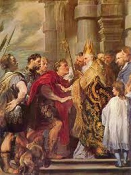
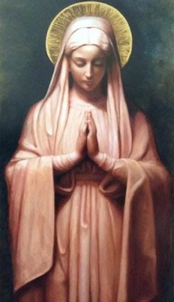
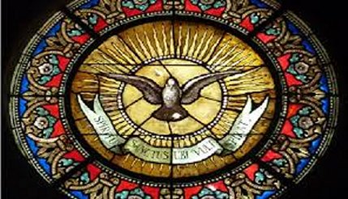
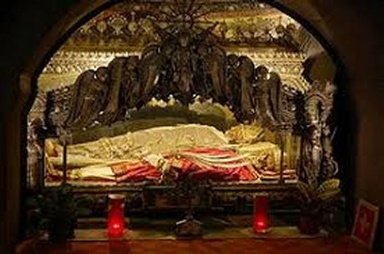

=SUA OBRA =
MORTE DE AMBRÓSIO
FIRME NA TEOLOGIA

Ambrosio não era apenas um Bispo eminente da Igreja, ele também era um dos médicos espirituais mais importantes. Em sua dogmática, ele segue os pais alexandrinos, Orígenes, Basílio o Grande, Gregório de Nazianceno e Gregório de Nissa. Sua exegese é uma explicação alegórica e mística dos textos. Compôs hinos que permaneceram famosos e tiveram uma grande influência no desenvolvimento da poesia religiosa no catolicismo.
Ambrósio é também um dos Doutores da Igreja pela relação latina, juntamente com Santo Agostinho, São Jerônimo e São Gregório, o Grande. Os estudos e a equilibrada consciência episcopal de Ambrósio alargaram o crescente campo da Doutrina da Igreja, da mesma forma que o seu ministério sacerdotal também cresceu e diversificou. Esta realidade estava fundamentada nos ensinamentos que recebeu desde criança, que lhe permitiram exercitar um admirável padrão de ética cristã. Desta prodigiosa fonte de conhecimentos nasceram os livros: “De officiis ministrorum”,“De viduis”,“De virginitate” e “De paenitentia”.
Ele cultivava a convicção de que a Liturgia devia se constituir numa ferramenta para melhor servir e inspirar o povo cristão em sua adoração a DEUS, e não se tornar um modelo rígido e invariável. A respeito deste assunto, seu conselho a Santo Agostinho sobre a Liturgia, é que ele procurasse sempre seguir o costume litúrgico local.
AMBRÓSIO AMAVA NOSSA SENHORA

São Ambrósio influenciou os Papas de sua época como Damaso (366-384) e Sirício (384-399), e posteriormente Leão Magno (440-461). No pensamento e na convicção dele: A “Virgindade de MARIA”e SUA realidade como “MÃE DE DEUS” são Dons Divinos:
"O nascimento virginal é digno de DEUS. Que nascimento humano poderia ser mais digno de DEUS que aquele no qual o imaculado FILHO DE DEUS manteve a pureza de sua origem imaculada ao se tornar humano?"
"Nós confessamos que CRISTO, NOSSO SENHOR, nasceu de uma Virgem e, portanto, rejeitamos a ordem natural das coisas. Pois não foi através de um homem que ELA concebeu, mas através do ESPÍRITO SANTO."
"CRISTO não está divido, é UM. Se O adoramos como o FILHO DE DEUS, não negamos SEU nascimento através da Virgem. Mas ninguém deve ampliar este entendimento em relação à MARIA. MARIA era o Templo de DEUS, mas não DEUS no templo. Portanto, apenas AQUELE que estava no Templo é que deve ser adorado."
"Sim, verdadeiramente abençoada por ter superado o sacerdote Zacarias: Enquanto ele negou, a Virgem retificou o erro. Não admira que o SENHOR, desejando resgatar o mundo, tenha começado SUA Obra com MARIA. Assim, ELA, através DA QUAL a salvação estava sendo preparada para todos os povos, tenha sido a primeira a receber o prometido Fruto da Salvação.”
São Ambrósio via a Virgindade como superior ao Matrimônio e via MARIA como um modelo perfeito de “virgindade”.
ILUMINADO PELO ESPÍRITO SANTO
Na palavra de grandes
escritores cristãos, as obras de Ambrósio são sempre atuais na Igreja e a elas são sempre
recorridas, sendo consultadas com frequência. 
Nos documentos do Concílio Vaticano II Ambrósio é citado e invocado como fundamento pelo menos cinco vezes na “Constituição Dogmática Lúmen Gentium” e ainda na “Constituição Gaudium et Spes” e na “Dei Verbum” é também mencionado, o Concílio recorreu diversas vezes a ele nos Decretos Ad gentes”, “Perfectas caritatis” e “Optatam totius” para confirmação da sua doutrina.
Também o Papa Paulo VI nele se apóiou para escrever a “Constituição Apostólica Poenitemini” e na Exortação Apostólica “O Culto à VIRGEM MARIA”. Estes e outros documentos eclesiásticos demonstram a sua atualidade dentro do Magistério da Igreja Católica.
Ambrósio escreveu muitas obras e compôs diversa musicas.
O Papa Bento XVI discorrendo sobre ele diz que Ambrósio: "Trouxe para o ambiente latino a meditação das Escrituras, iniciando no Ocidente a prática da “Lectio Divina”, que orientou a sua pregação e os seus escritos, que brotam precisamente da escuta da Palavra de DEUS. Com ele os catecúmenos aprendiam primeiro a arte de viver bem para se preparar depois para os grandes mistérios de CRISTO, e sua pregação partia da leitura dos Livros Sagrados, para viver de conformidade com a Revelação Divina.”
"Nessa leitura onde o coração se esforça por compreender a palavra de DEUS, se entrevê o método da catequese ambrosiana: a Escritura intimamente assimilada sugere os conteúdos que se devem anunciar para converter os corações. A catequese é, pois, inseparável do testemunho de vida." (Papa Bento XVI).
DERRADEIRAS PALAVRAS
Santo Agostinho dizia: “Esse gentil Bispo ao se apresentar e ao falar, exerce toda a sua atração, mas sempre impondo um grande respeito. Sua firmeza era inabalável: ninguém ousava em levantar ou discutir as suas ordens. Verdadeiramente ele era amado e temido”.
“Ele dá a impressão de total integridade no que exige, e mesmo quando está em ação, nunca se mostra intratável, desumano e inescrupuloso. Pode acontecer que num momento alguém odeie os seus adjetivos, mas sua pessoa impõe respeito, pois durante a sua vida os seus inimigos nunca puderam recusar-lhe estima e consideração”.
“Todos, portanto, acolhem Ambrósio como figura de destaque no campo da política, e enfatizam de bom grado o seu temperamento romano, seu gosto pela ação que o leva a se destacar nos trabalhos pastorais o aspecto moral e prático. A fonte da moralidade de Ambrósio, o sotaque penetrante dos seus escritos, nos faz descobrir a densidade e o valor excepcional do seu sentimento religioso, o fervor da sua fé, a paixão que torna belo e emocionante o seu amor a CRISTO e a Igreja, que com muito prazer ele menciona, nas profundezas de sua realidade celestial”.
“A eloquência e o estilo de Ambrósio encanta. Enquanto eu abria o meu coração para descobrir o quanto sua palavra era eloquente, ao mesmo tempo, a medida que ela penetrava em meu coração, percebia o quanto ela era verdadeira”.
“Este homem me cumprimenta paternalmente... Com uma caridade digna de um Bispo... Verdadeiramente este homem, é um homem de DEUS!”
FALECIMENTO DE SANTO AMBRÓSIO
Depois de um dedicado trabalho realizado em benefício da Igreja e do Cristianismo, Ambrósio com a tranquilidade de um espírito vencedor e amoroso, partiu para a eternidade ao encontro da SANTÍSSIMA TRINDADE e de nossa MÃE SANTÍSSIMA. Morreu na residência episcopal em Milão, no dia 4 de Abril de 397, numa sexta-feira da Semana Santa, dois anos depois da morte do seu amigo Imperador Teodósio. O corpo de Ambrósio ainda hoje pode ser visto na Basílica de Santo Ambrósio em Milão, onde diariamente é visitado e venerado.
